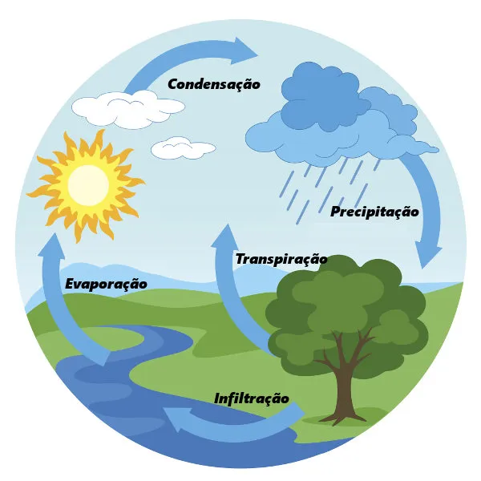
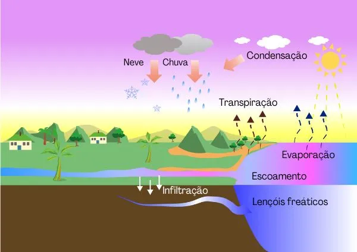

ciclo da água
"O ciclo da água, também conhecido como ciclo hidrológico, refere-se ao movimento contínuo que a água faz pelo meio físico e pelos seres vivos do ecossistema, passando através da atmosfera, hidrosfera, litosfera e biosfera. Trata-se, portanto, de um importante ciclo biogeoquímico que faz com que esse indispensável recurso natural esteja constantemente no ambiente.
"
Veja mais sobre "Ciclo da água" em: https://brasilescola.uol.com.br/biologia/ciclo-agua.htm

" ciclo da água, também chamado de ciclo hidrológico, ocorre por meio das mudanças dos estados físicos e da movimentação da água pelos seres vivos e pelo meio ambiente. Esse ciclo depende diretamente da energia solar, dos movimentos de rotação da Terra e, até mesmo, da gravidade."
"O ciclo da água, também chamado de ciclo hidrológico, ocorre por meio das mudanças dos estados físicos e da movimentação da água pelos seres vivos e pelo meio ambiente. Esse ciclo depende diretamente da energia solar, dos movimentos de rotação da Terra e, até mesmo, da gravidade."
Veja mais sobre "Ciclo da água" em: https://brasilescola.uol.com.br/biologia/ciclo-agua.htm
